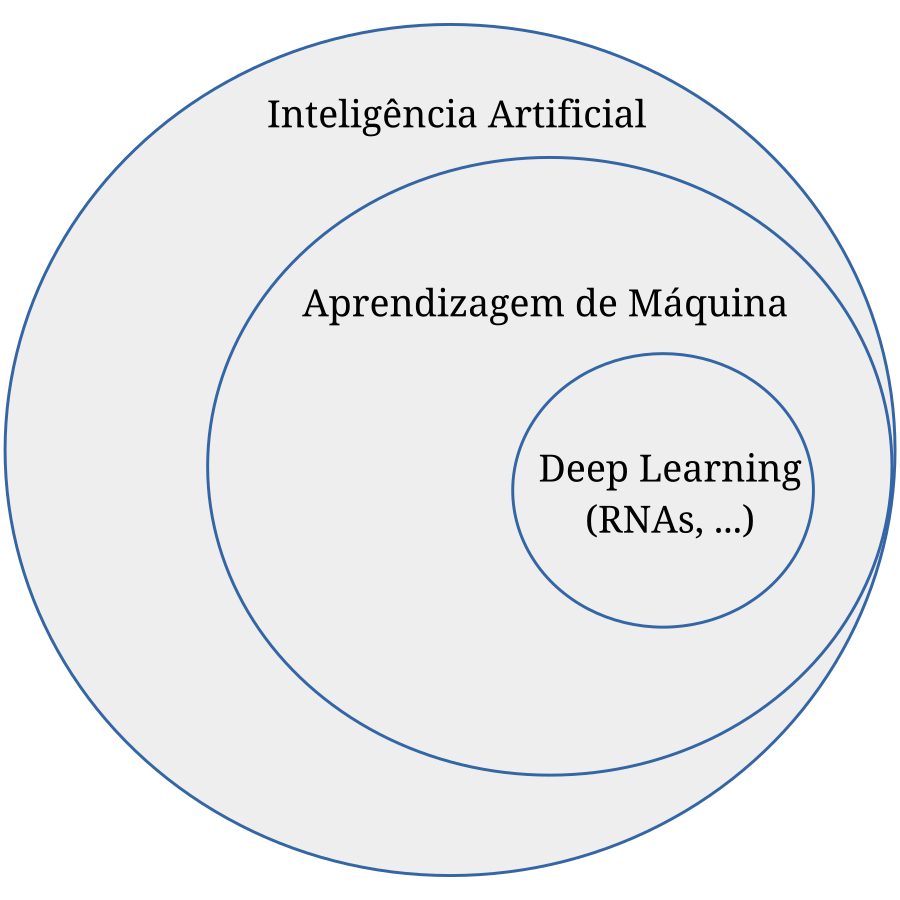

Ajude a manter o site livre, gratuito e sem propagandas. Colabore!
Capítulo 1 Introdução
Uma rede neural artificial (RNA) é um modelo de aprendizagem profunda (deep learning), uma área da aprendizagem de máquina (machine learning). O termo tem origem no início dos desenvolvimentos da inteligência artificial, em que modelos matemáticos e computacionais foram inspirados no cérebro biológico (tanto de humanos como de outros animais). Muitas vezes desenvolvidos com o objetivo de compreender o funcionamento do cérebro, também tinham a intensão de emular a inteligência. A Figura 1.1 ilustra a relação entre essas áreas

Figura 1.1: Diagrama de Venn para a relação entre redes neurais artificiais e a inteligência artificial.
Uma RNA consiste em uma rede de unidades básicas de processamento (chamadas de neurônios artificiais). A primeira unidade data do modelo de neurônio de McCulloch111Warren Sturgis McCulloch, 1898 - 1969, neurofisiologista e cyberneticista estadunidense. Fonte: Wikipedia.-Pitts222Walter Harry Pitts, Jr., 1923 - 1969, lógico e neurocientista estadunidense. Fonte: Wikipedia. [7], conhecido como perceptron de Rosenblatt333Frank Rosenblatt, 1928 - 1971, psicólogo estadunidense. Fonte: Wikipédia. devido ao primeiro algoritmo de treinamento para problemas de classificação linearmente separável [10, 11]. Um modelo similar é o ADALINE (adaptive linear element, [13]), em que o método do gradiente é utilizado para seu treinamento. Pela questão histórica, vamos usar o termo perceptron para designar a unidade básica (o neurônio), mesmo que o modelo de neurônio a ser estudado não seja restrito ao original.
Métodos de aprendizagem profunda são técnicas de treinamento (calibração) de composições em múltiplos níveis, aplicáveis a problemas de aprendizagem de máquina que, muitas vezes, não têm relação com o cérebro ou neurônios biológicos. Um exemplo, é a rede neural que mais vamos explorar nas notas, o perceptron multicamada (MLP, do inglês multilayer perceptron), um modelo de progressão (feedfoward) de rede profunda em que a informação é processada pela composição de camadas de perceptrons. Embora a ideia de fazer com que a informação seja processada através da conexão de múltiplos neurônios tenha inspiração biológica, usualmente a escolha da disposição dos neurônios em uma MLP é feita por questões algorítmicas e computacionais. I.e., é baseada na eficiente utilização da arquitetura dos computadores atuais.
Embora o desenvolvimento de técnicas de aprendizagem de máquina para a resolução de equações diferenciais parciais (EDPs) datem dos anos 90, RNAs passaram a ser amplamente utilizadas na solução de EDPs a partir da publicação das redes neurais informadas pela física (PINNs, do inglês, physics-informed neural networks [9]). Desde de então, têm sido aplicadas na simulação de diversos modelos de fundamental importância. Por exemplo, na solução da equação de Burgers, das equações de Navier-Stokes, das equações de Euler [6], de transferência de calor [2] e da equação de advecção [12], entre tantos outros. A PINN é um método de deep learning para a solução de problemas diretos ou inversos envolvendo equações diferenciais. Sua principal vantagem esá na sua facilidade de integrar modelos matemáticos e dados na resolução de problemas.
Envie seu comentário
Aproveito para agradecer a todas/os que de forma assídua ou esporádica contribuem enviando correções, sugestões e críticas!